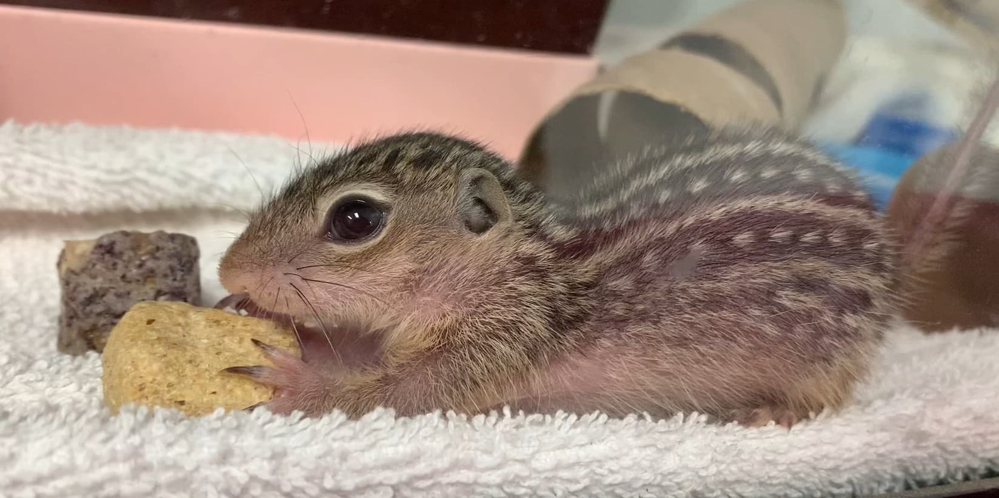
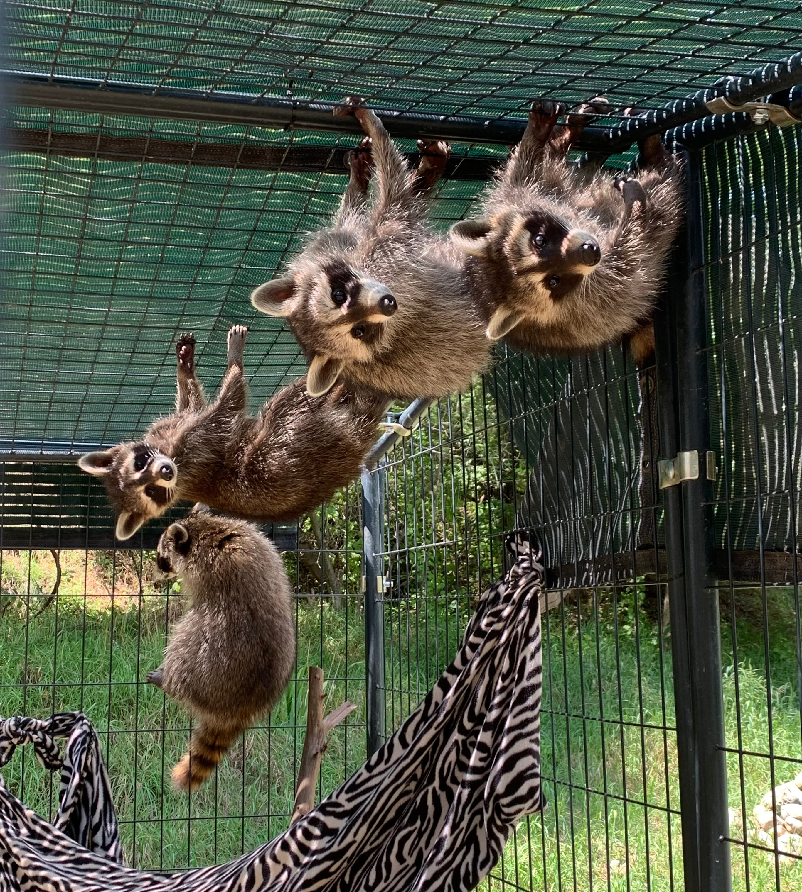
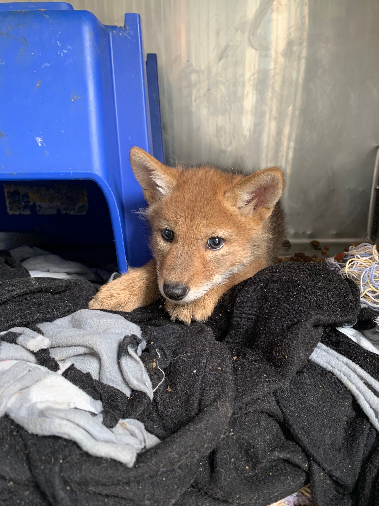
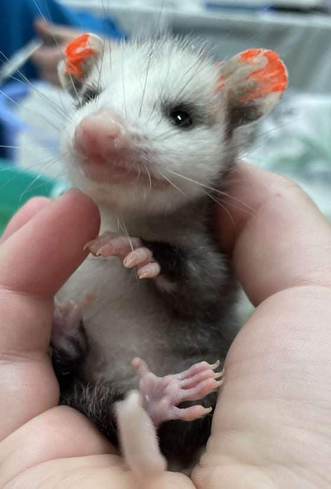
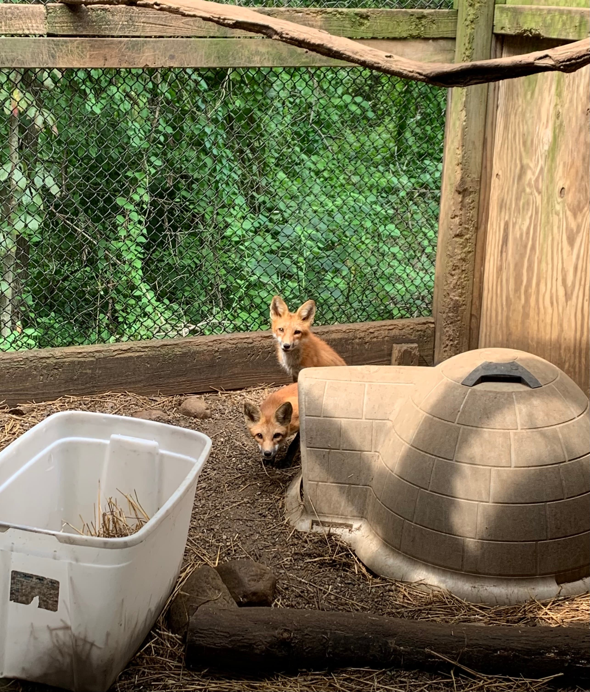
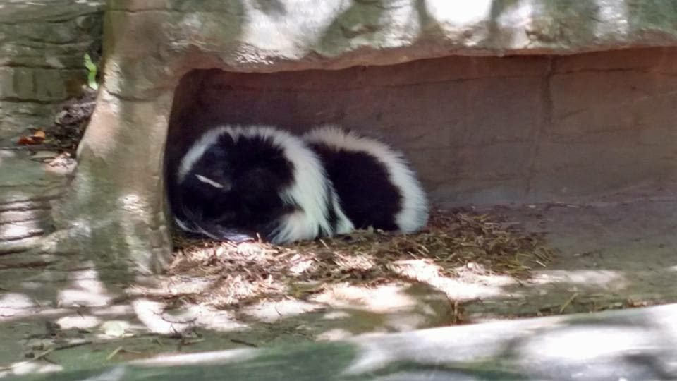
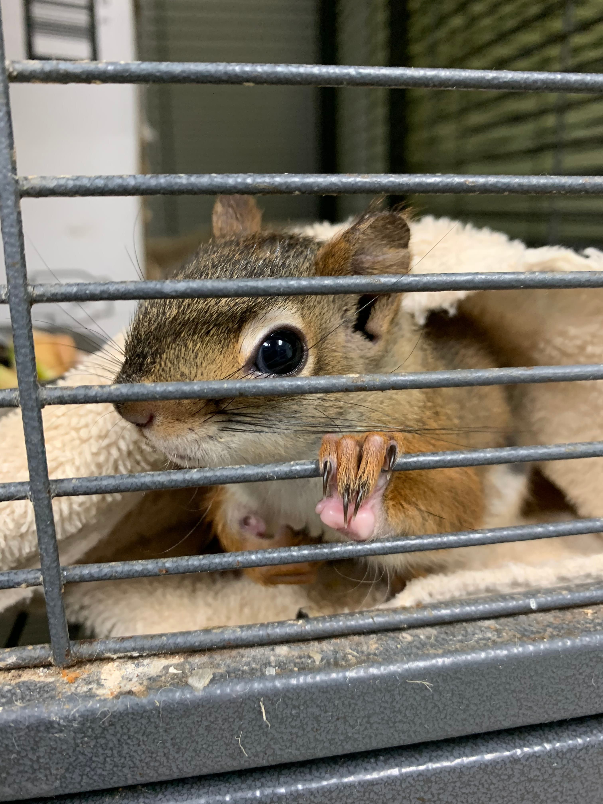
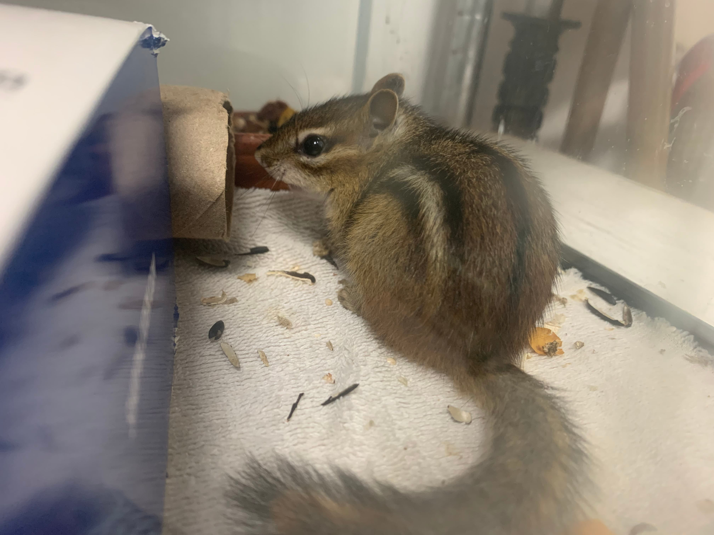
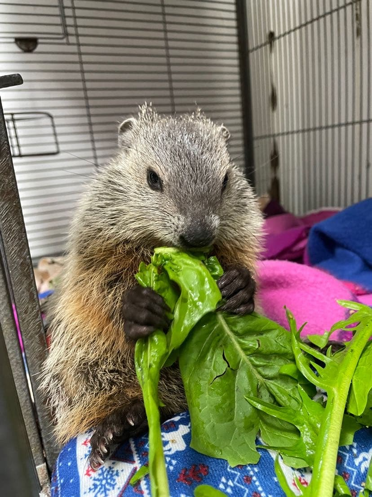
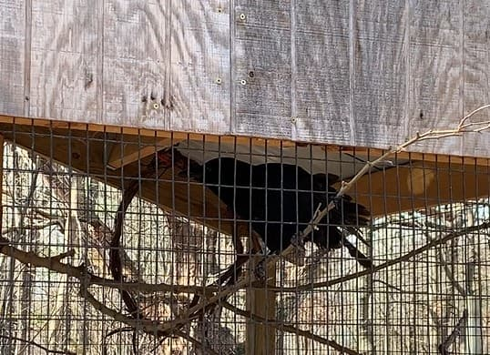

Living Alongside Urban Wildlife
Learn how to safely and humanely coexist with wildlife in your community.
What You'll Learn
How to Identify Wildlife
Learn how to recognize common urban wildlife based on behavior, activity patterns, and environment—without needing close contact.
What to Do With Injured or Young Animals
Understand when intervention is necessary and when it is not. Many animals that appear abandoned are still being cared for, while others require immediate professional help.
Understanding Common Wildlife Myths
Explore widespread misconceptions—such as animals abandoning young due to human scent or being naturally aggressive—and learn what actually drives wildlife behavior.
How to Prevent Wildlife Conflicts
Discover humane deterrents based on animal senses, including sound, light, smell, taste, and physical barriers. Learn how combining multiple methods can be more effective than relying on just one.
Responding Safely and Responsibly
Learn how your actions impact wildlife, including why feeding, relocation, or improper intervention can cause harm—and what to do instead.
Finding Help & Emergency Response
Learn how to safely transport wildlife, when to contact professionals, and how to prepare with a basic wildlife emergency kit.
Meet Common Urban Wildlife
Click each animal to learn more about their behavior and role in urban environments.
Raccoons
Nocturnal scavengers adapted to cities.
Coyotes
Adaptable predators that avoid people.
Opossums
Beneficial scavengers and pest reducers.
Foxes
Skittish hunters active at dawn and dusk.
Skunks
Nocturnal animals that only spray when threatened.
Squirrels
Common seed-dispersing rodents.
Chipmunks
Small burrowing rodents found in yards.
Woodchucks
Large burrowing herbivores.
Crows
Highly intelligent urban birds.
Raccoons
Identification: Medium-sized mammal with a masked face and ringed tail. Mostly nocturnal.
Behavior: Highly intelligent and dexterous; capable of opening containers, doors, and trash bins.
Ecological role: Scavengers that help clean up organic waste and contribute to nutrient cycling.
Human interaction: Most conflicts come from unsecured trash or food sources, not aggression.
Key takeaway: Prevention through secure waste storage is the most effective way to reduce conflict.

Coyotes
Identification: Medium wild canid resembling a small wolf with a narrow muzzle and bushy tail.
Behavior: Naturally cautious and avoids humans whenever possible.
Ecological role: Important predators that help control rodent and small mammal populations.
Human interaction: Conflicts usually occur due to food access or pets being left unattended.
Key takeaway: Coyotes are naturally shy; maintaining distance and removing attractants prevents issues.

Opossums
Identification: Small to medium marsupial with a pointed face and hairless tail.
Behavior: Non-aggressive; may “play dead” as a defense response.
Ecological role: Helps control ticks, insects, and carrion.
Human interaction: Often misunderstood due to appearance, but generally harmless.
Key takeaway: Opossums are beneficial scavengers that reduce pest populations.

Foxes
Identification: Small wild canid with pointed ears and a bushy tail.
Behavior: Solitary, cautious, and mostly active at dawn and dusk.
Ecological role: Controls rodent and small animal populations.
Human interaction: Typically avoid humans; conflicts are rare without food conditioning.
Key takeaway: Foxes thrive when left undisturbed and not fed.

Skunks
Identification: Black-and-white striped mammal with a strong defensive spray.
Behavior: Calm and slow-moving; uses spray only as a last defense.
Ecological role: Controls insects, grubs, and small pests.
Human interaction: Most issues occur due to surprise encounters or den sites under structures.
Key takeaway: Skunks are non-aggressive and prefer avoidance over confrontation.

Squirrels
Identification: Small rodent with bushy tail, commonly seen during daylight.
Behavior: Highly active, alert, and quick-moving.
Ecological role: Important for seed dispersal and tree regeneration.
Human interaction: May enter attics or chew materials when seeking shelter.
Key takeaway: Exclusion and habitat modification prevent most conflicts.

Chipmunks
Identification: Small striped rodent with fast ground movement.
Behavior: Burrowing and food-storing species.
Ecological role: Helps spread seeds and aerate soil.
Human interaction: Occasionally burrow near foundations or gardens.
Key takeaway: Minor deterrents and habitat management are usually sufficient.

Woodchucks (Groundhogs)
Identification: Large, stout burrowing rodent.
Behavior: Extensive burrow systems used for shelter and hibernation.
Ecological role: Soil aeration and habitat creation for other species.
Human interaction: May damage gardens or lawns through burrowing.
Key takeaway: Exclusion fencing is the most effective prevention method.

Crows
Identification: Large black bird with strong vocal communication.
Behavior: Extremely intelligent with problem-solving abilities.
Ecological role: Scavengers that help clean urban environments.
Human interaction: May gather in groups near food sources or refuse areas.
Key takeaway: Food management reduces most human–crow conflicts.
